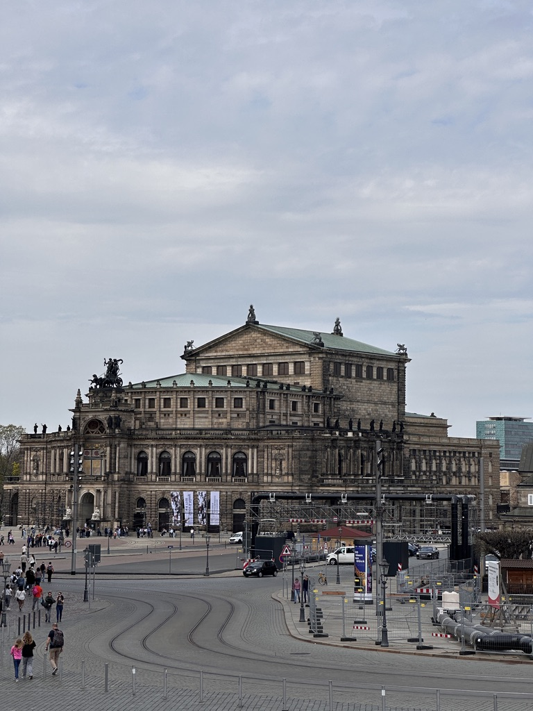
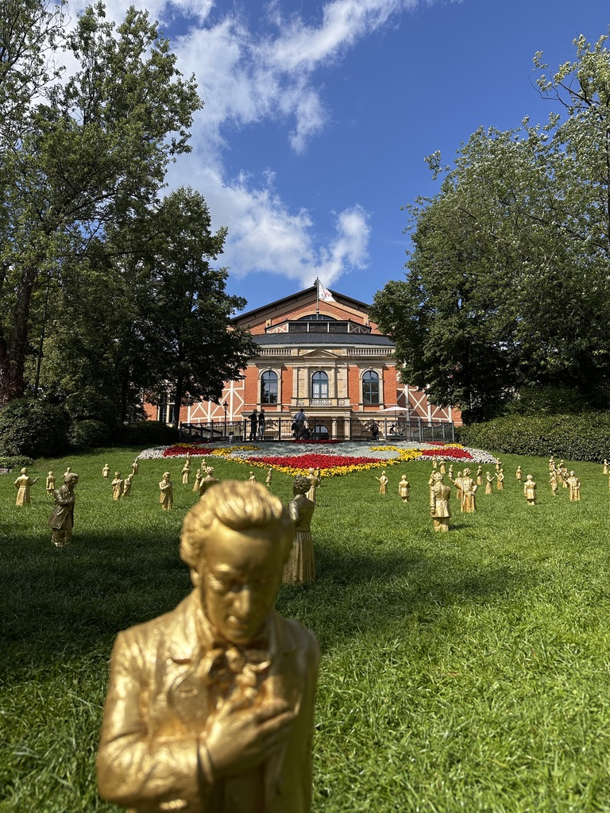

classical music (favourite: Beethoven, Bruckner, Wagner), piano art
19-21/12/2024, Berlin Philharmonie, Maestro Herbert Blomstedt performed Bruckner Symphony No.9. Kneel down to the real artist.

25/7-2/8, 2025, at Bayreuth. Best Festival in the world.

Semperoper Dresden, Best Staatsoper.
swimming (national 2nd-class)
football (favourite team: Arsenal, Argentina, Barça)
Keep Calm, Steady and never give up.
coffee, Hand Brew is a very delicate, mysterious parameter optimization art.